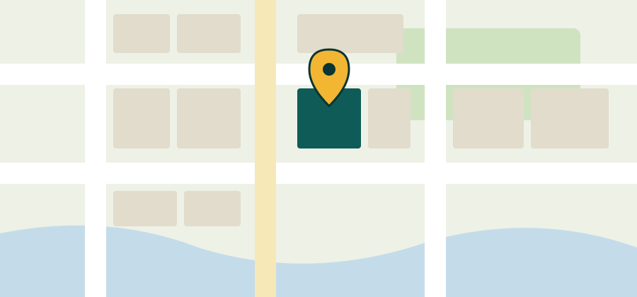

Home / Get Food
Get Food
Everyone is welcome. Here is when we are open and what a first visit looks like.
Hours & Location
| Tuesday | 4 – 7 pm (supper at 5:30 pm) |
|---|---|
| Thursday | 10 am – 1 pm |
| Saturday | 9 am – 12 pm |
214 Alder Street, Fennick Hollow. Enter through the green door on the Alder Street side. There is street parking and a loading zone by the side entrance.
Holiday closures are posted at the front door and on our news page.

What to Expect
- Check in at the front deskA volunteer will greet you and take your name.
- Register onceOn your first visit, registration takes about ten minutes.
- Choose your groceriesWalk the shelves with a cart and pick what works for your family.
- Get help to the carVolunteers can carry bags out for you.
What to Bring
- A photo ID for the first visit
- Something with your current address, such as a utility bill or mail
- Your own bags or a box, if you have them (we have extras)
- A cooler bag in warm weather for eggs and dairy
Can’t get here? Ask about home delivery.
Contact Us
Questions about getting food, volunteering or donating? Call (555) 555-0142 or email hello@cinderwellpantry.example. The office is open Monday through Friday, 9 am to 4 pm.